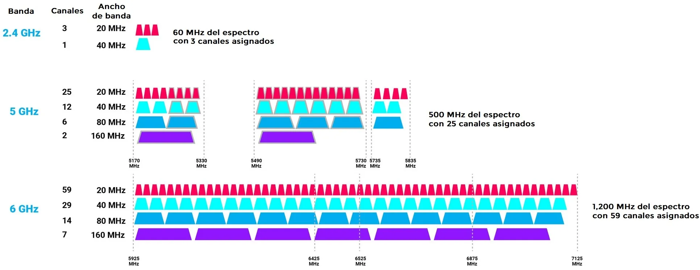

Redes Inalámbricas
 Resumen del Tema
Resumen del Tema
Las redes inalámbricas permiten la conexión de nodos sin necesidad de una conexión física (cables), transmitiendo la información mediante ondas electromagnéticas a través del espacio.
¿Cómo funcionan las redes inalámbricas?
A diferencia de las redes cableadas que usan cobre o fibra, las inalámbricas utilizan el espectro electromagnético.
- Emisor: Convierte los datos digitales en señales de radio.
- Medio: El aire (o el vacío).
- Receptor: Capta las ondas y las vuelve a transformar en datos digitales.
Tipos de Redes Inalámbricas (Clasificación por Alcance)
- WPAN (Wireless Personal Area Network): Alcance corto (unos 10 metros). El ejemplo clásico es el Bluetooth para conectar ratones, teclados o auriculares.
- WLAN (Wireless Local Area Network): El famoso Wi-Fi. Cubre una casa u oficina y permite la movilidad del usuario dentro del recinto.
- WMAN (Wireless Metropolitan Area Network): Cubre ciudades enteras. Tecnologías como WiMAX se usan para dar internet a barrios o zonas rurales.
- WWAN (Wireless Wide Area Network): Alcance nacional o global. Aquí entran las redes celulares como 4G y 5G, además de las conexiones por satélite.
Dispositivos de una Red Inalámbrica
Para montar una red local inalámbrica efectiva, se utilizan estos elementos:
- Punto de Acceso (Access Point): El "puente" entre la red cableada y la inalámbrica.
- Router Inalámbrico: El que seguramente tienes en casa; combina las funciones de router y punto de acceso.
- Adaptadores de Red (NIC): Las tarjetas que traen los laptops y celulares para "escuchar" la señal.
Estándares y Seguridad
No todas las redes Wi-Fi son iguales. Se rigen por el estándar IEEE 802.11.
Dato importante: Las redes inalámbricas son más vulnerables que las cableadas porque la señal viaja por el aire y cualquiera puede "captarla". Por eso es vital usar cifrados modernos como WPA3.
El Espectro Radioeléctrico y Frecuencias

Las redes inalámbricas no son mágicas; viajan por canales específicos. Las más comunes son:
- Banda de 2.4 GHz: Es la más antigua. Tiene un alcance muy largo y atraviesa paredes fácilmente, pero es lenta y está muy congestionada (muchos dispositivos como microondas y Bluetooth la usan).
- Banda de 5 GHz: Es mucho más rápida y tiene menos interferencias, pero su alcance es menor y le cuesta más atravesar obstáculos físicos.
- Banda de 6 GHz (Wi-Fi 6E): La más nueva, diseñada para evitar totalmente las interferencias en entornos muy saturados.
Topologías de Redes Inalámbricas
Existen dos formas principales en las que los dispositivos se organizan para hablar entre sí:
- Modo Infraestructura: Es el que usamos todos. Hay un Punto de Acceso central (Router) que gestiona todas las conexiones.
- Modo Ad-Hoc: Los dispositivos se conectan directamente entre sí sin necesidad de un router. Es útil para transferencias rápidas de archivos de punto a punto (como AirDrop).
- Redes Mesh (Malla): Una evolución moderna donde varios nodos se comunican entre sí para cubrir áreas gigantescas (como una mansión o un centro comercial) sin perder velocidad.